개인 Windows PC 모니터링 Telegram 봇. 시스템 상태 확인, 알림 수신, 알림 전달까지 — 모두 스마트폰에서. 포트 노출 제로.

CPU, RAM, 디스크, 네트워크, 가동 시간을 손쉽게 확인. 어디서나 PC 상태를 체크하세요.
PC가 부팅되면 IP, 호스트명, 시간과 함께 Telegram으로 즉시 알림을 받습니다.
Ollama, PostgreSQL, 개발 서버 등 중요한 프로세스를 감시하고 다운타임 시 알림을 받습니다.
Windows 오류/심각 이벤트를 Telegram으로 전달. 크래시와 시스템 문제를 실시간으로 포착.
Chrome, Slack 등 Windows 토스트 알림을 프라이버시 필터링과 함께 휴대폰으로 전달.
포트를 열지 않고, 클라우드 중계 없음, 키로깅 없음. 민감한 내용은 기본적으로 마스킹. 허용 목록 기반 채팅 접근.
| 명령어 | 설명 |
|---|---|
/ping | 봇 상태 확인 |
/help | 사용 가능한 명령어 표시 |
/status | 전체 PC 상태 요약 |
/disk | 드라이브별 디스크 사용량 |
/process | 감시 중인 프로세스 상태 |
/services | Windows 서비스 상태 |
/events | 최근 Windows 이벤트 로그 |
/alerts | 최근 알림 이력 |
/mute 1h | 알림 음소거 |
/diagnostics | 에이전트 자체 진단 |